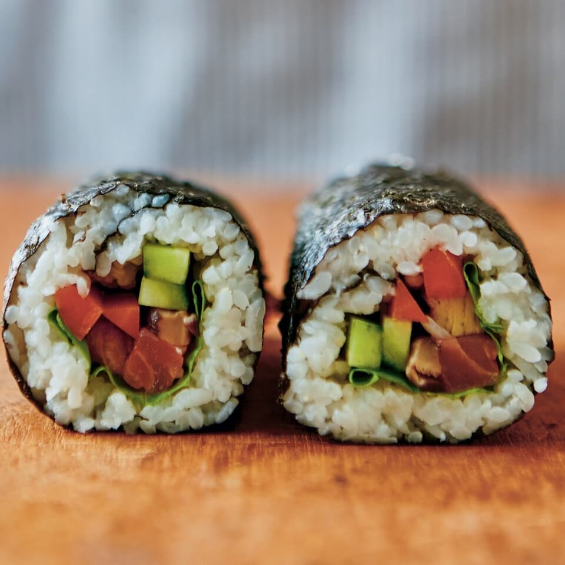
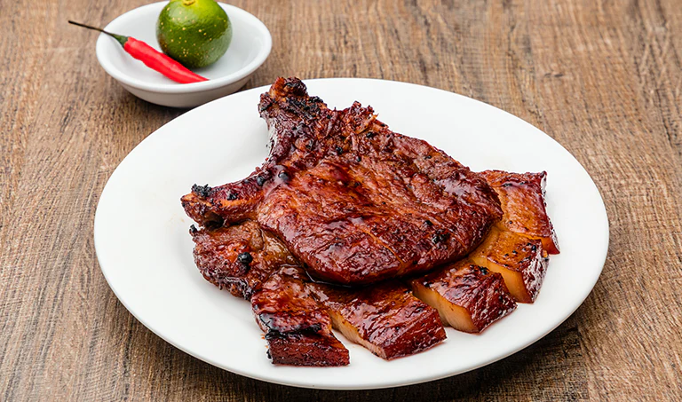
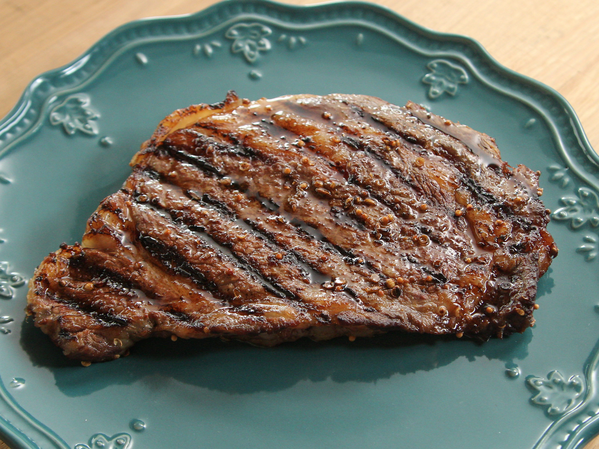
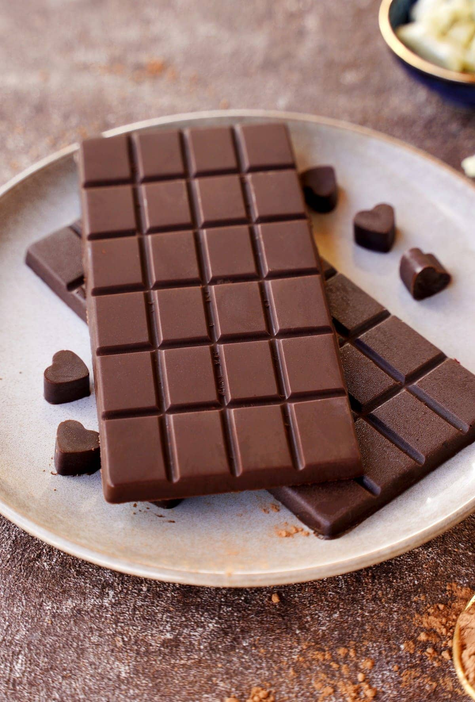

Top 1

Pizza
A savory dish of Italian origin consisting of a usually round, flattened base of leavened wheat-based dough topped with tomatoes, cheese, and various other ingredients baked at a high temperature.
A savory dish of Italian origin consisting of a usually round, flattened base of leavened wheat-based dough topped with tomatoes, cheese, and various other ingredients baked at a high temperature.

A sandwich consisting of one or more cooked patties of ground meat, usually beef, placed inside a sliced bread roll or bun, often served with cheese, lettuce, and sauce.

A traditional Japanese dish of prepared vinegar-flavored rice, usually with some sugar and salt, accompanied by a variety of ingredients, such as seafood, often raw, and vegetables.

A traditional Mexican dish consisting of a small hand-sized corn or wheat tortilla topped with a filling, which is then folded over the filling and eaten by hand.

A type of food typically made from an unleavened dough of wheat flour mixed with water or eggs, and formed into sheets or other shapes, then cooked by boiling or baking.

A sweetened frozen food typically eaten as a snack or dessert. It may be made from milk or cream and is flavored with a sweetener, either sugar or an alternative, and spices.

A loin cut taken perpendicularly to the spine of the pig and usually containing a rib or part of a vertebra. It is tender, juicy, and delicious when grilled, pan-seared, or baked.

A high-quality beef slice taken from the hindquarters of the animal, typically cooked by grilling or frying to varying degrees of doneness based on preference.

A dish consisting of chicken pieces that have been coated with seasoned flour or batter and pan-fried, deep-fried, or pressure-fried to give it a crispy skin.

A food preparation in the form of a paste or a solid block made from roasted and ground cacao seeds, typically sweetened and flavored with vanilla for dessert.